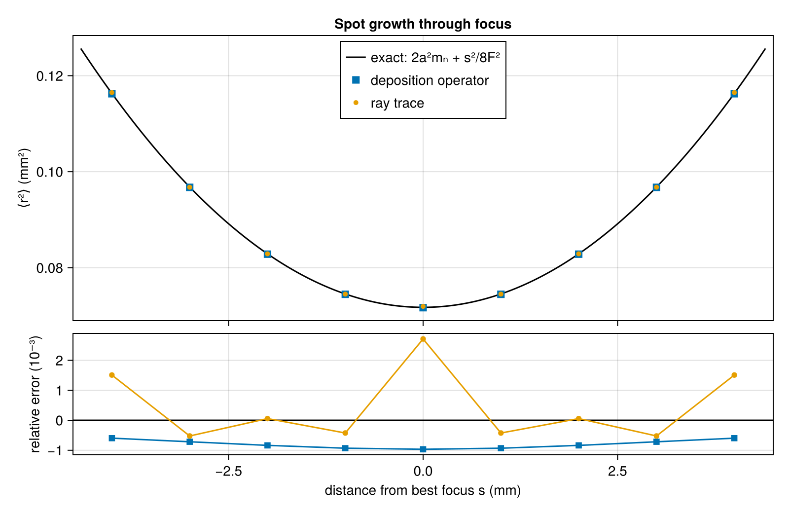
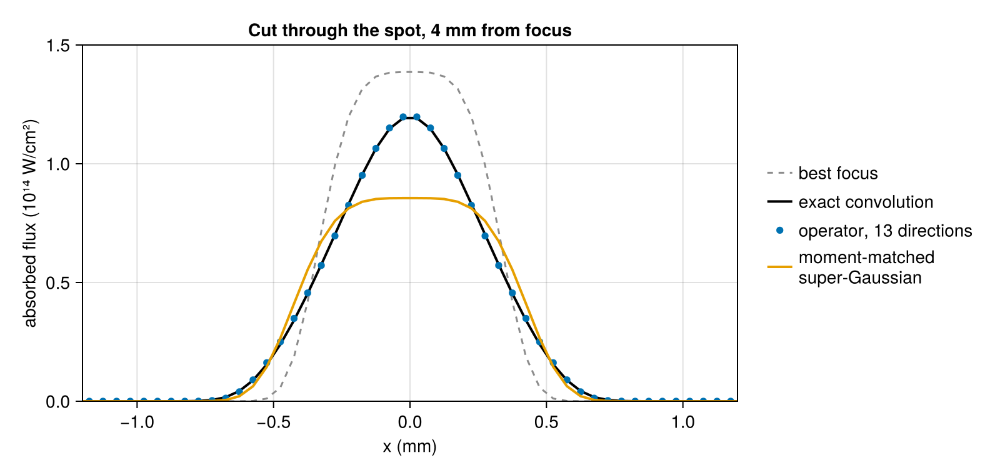
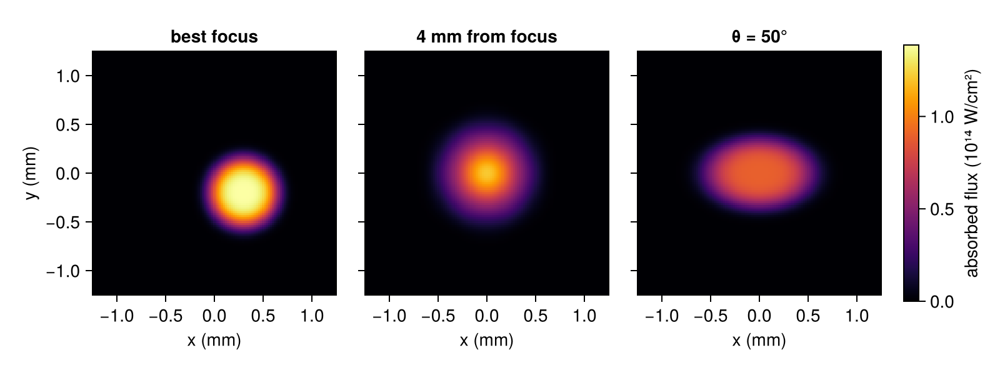

Laser spot on a foil
A phase plate placed before the focusing lens of a high-power laser breaks the beam into many small, mutually phased elements. Each element illuminates the whole focal region, and their sum, averaged over the speckle, is a smooth spot whose shape is set by the plate rather than by the aberrations of the beam. The spots of the continuous phase plates on NIF and the distributed phase plates on OMEGA are flat-topped and elliptical or round, and an elliptical super-Gaussian describes them well. A foil placed in such a beam, as in an area backlighter, absorbs the spot's power distribution as it is projected onto the foil's surface.
Three properties of that distribution have exact forms: the total power, the growth of the spot as the foil moves away from best focus, and the stretching of the footprint at oblique incidence. This tutorial computes the deposition on a foil with both of Briareus's methods and compares each property with its exact value. It introduces beams, spot profiles, the deposition operator, the reference ray trace and rendered images.
using Briareus
using CairoMakie
using LinearAlgebra
using Printf
CairoMakie.activate!(type = "png", px_per_unit = 2)
include(joinpath(pkgdir(Briareus), "docs", "literate", "_plotting.jl")) # figure helperscutaway! (generic function with 1 method)The spot and its defocus
A spot with semi-axes $a$ and $b$ and super-Gaussian order $n$ has the best-focus intensity
\[I(u, v) = \frac{P}{N_n\,a b}\,\exp\!\left[-\left(\frac{u^2}{a^2} + \frac{v^2}{b^2}\right)^{n/2}\right], \qquad N_n = \frac{2\pi\,\Gamma(2/n)}{n},\]
where $u$ and $v$ are transverse coordinates and $P$ is the beam power. Its second moment along $u$ is $\langle u^2\rangle = a^2 m_n$ with $m_n = \Gamma(4/n)/[2\Gamma(2/n)]$.
Because every point of the lens illuminates the whole spot, the light that reaches a point a distance $s$ from best focus arrives from a disk of focal points of radius $|s|/2F$, where $F$ is the f-number. In geometric optics the defocused profile is therefore the focal profile convolved with a uniform disk. Second moments of a convolution add, and a uniform disk of radius $\rho$ has $\langle u^2 \rangle = \rho^2/4$, so for a round spot the mean squared radius grows as
\[\langle r^2 \rangle(s) = 2 a^2 m_n + \frac{s^2}{8F^2}.\]
Briareus evaluates deposition in two ways, both built on a quadrature of the f-cone: a set of directions, equally weighted over the lens, whose spread reproduces the disk's second moment exactly. A DepositionOperator samples every lit surface at points fixed by the target and the beam directions; each point receives, from every cone direction that reaches it, the focal profile where the ray along that direction crosses the best-focus plane. This sum carries out the convolution and is differentiable in pointing, focus and power. raytrace_deposition launches rays from a grid of focal points along the same directions and follows them to the first surface.
The beam here comes from directly above, through OMEGA's SG4 phase plate, which gives a round spot with a 1/e radius of 0.36 mm and order 4.2 at f/6.7.
spot = omega_spot(:SG4)
F = 6.7
P = 0.5 # TW
m_n = Briareus._sg_moment(spot.order)
moment(s) = 2 * spot.a^2 * m_n + s^2 / (8F^2)The foil is a 6 mm square in the plane $z = 0$, facing up, divided into $120 \times 120$ patches. foil builds the Component, and Target assembles components into the geometry the calculations use.
W, N = 6.0, 120
target = Target(foil(:foil, (0, 0, 0), (0, 0, 1); width = W, n = N, two_sided = false))Target with 1 components, 14400 elements, 28800 triangles
foil surface Au 14400 elements area 36.0000 mm²
Power and centroid
A Beam is given by its port angles, power, spot, f-number and aim point. Here it is aimed off center, at $(0.3, -0.2, 0)$ mm.
beam = Beam("B"; theta = 0, phi = 0, power = P, spot, fnumber = F, aim = (0.3, -0.2, 0.0))
op = DepositionOperator(target, [beam])
fast = deposit(op, [beam])
ray = raytrace_deposition(target, [beam]; nspot = 61, ncone = 61)The operator's deposition is a vector of absorbed power per element, and its sum is the power that reached the foil. The ray trace conserves power exactly; the operator integrates the profile by quadrature.
centroid(d) = sum(d.element .* target.elem_centroid) / sum(d.element)
for (label, d) in (("operator", fast), ("ray trace", ray))
c = centroid(d)
@printf("%-9s power %.6f TW centroid (%.4f, %.4f) mm\n", label, sum(d.element), c[1], c[2])
endoperator power 0.500000 TW centroid (0.3000, -0.2000) mm
ray trace power 0.500000 TW centroid (0.3002, -0.1997) mmSpot size through focus
Moving the focus a distance $s$ along the beam leaves the foil at distance $s$ from best focus. The second moment of the deposited power is computed from the patch centroids. Assigning each patch's power to its centroid adds the variance of a uniform distribution over the patch, $\Delta^2/12$ per axis for a patch of side $\Delta$, which is removed (Sheppard's correction).
Δ = W / N
function spread(d)
c = centroid(d)
return sum(d.element .* [sum(abs2, x - c) for x in target.elem_centroid]) /
sum(d.element) - 2Δ^2 / 12
end
shifts = range(-4.0, 4.0; length = 9)
fast_spread, ray_spread = Float64[], Float64[]
for s in shifts
b = Beam("B"; theta = 0, phi = 0, power = P, spot, fnumber = F, defocus = -s)
o = DepositionOperator(target, [b])
push!(fast_spread, spread(deposit(o, [b])))
push!(ray_spread, spread(raytrace_deposition(target, [b]; nspot = 61, ncone = 61)))
endThe upper panel compares the second moments with the exact growth; the lower panel shows their relative errors, $\langle r^2\rangle/\langle r^2\rangle_{\rm exact} - 1$.
fig = Figure(size = (800, 520))
ax = Axis(fig[1, 1], ylabel = "⟨r²⟩ (mm²)", title = "Spot growth through focus",
xticklabelsvisible = false)
ss = range(-4.4, 4.4; length = 200)
lines!(ax, ss, moment.(ss), color = :black, label = "exact: 2a²mₙ + s²/8F²")
scatter!(ax, shifts, fast_spread, marker = :rect, markersize = 12, label = "deposition operator")
scatter!(ax, shifts, ray_spread, marker = :circle, markersize = 7, label = "ray trace")
axislegend(ax, position = :ct)
err = Axis(fig[2, 1], xlabel = "distance from best focus s (mm)", ylabel = "relative error (10⁻³)")
hlines!(err, [0.0], color = :black)
scatterlines!(err, shifts, 1e3 .* (fast_spread ./ moment.(shifts) .- 1), marker = :rect,
markersize = 10)
scatterlines!(err, shifts, 1e3 .* (ray_spread ./ moment.(shifts) .- 1), marker = :circle,
markersize = 8)
linkxaxes!(ax, err)
xlims!(ax, -4.5, 4.5)
rowsize!(fig.layout, 2, Relative(0.3))
rowgap!(fig.layout, 8)
fig
The largest relative errors over the scan:
@printf("operator %.1e\nray trace %.1e\n",
maximum(abs.(fast_spread ./ moment.(shifts) .- 1)),
maximum(abs.(ray_spread ./ moment.(shifts) .- 1)))operator 9.7e-04
ray trace 2.7e-03Both follow the exact growth, because the cone quadrature carries the disk's second moment exactly; the residuals come from integrating a flat-topped profile over patches, from the approximation behind Sheppard's correction, and for the ray trace from sampling the focal plane on a grid.
Shape far from focus
Second moments do not fix the shape. Four millimetres from focus the f-cone disk has a radius of 0.3 mm, comparable to the spot, and the convolution rounds the flat top into a lower, broader peak with soft shoulders. The exact convolution is evaluated here directly, by averaging the focal profile over 3000 points of the disk of focal points at each of 16 points in each patch near the spot.
function exact_deposition(s; ndisk = 3000, nsub = 4)
golden = π * (3 - sqrt(5))
disk = [sqrt((i - 0.5) / ndisk) .* (cos(i * golden), sin(i * golden)) for i in 1:ndisk]
ρ = abs(s) / 2F
E = zeros(nelements(target))
Threads.@threads for e in 1:nelements(target)
c = target.elem_centroid[e]
hypot(c[1], c[2]) < 1.5 || continue
acc = 0.0
for i in 1:nsub, j in 1:nsub, (u, v) in disk
x = c[1] + Δ * ((i - 0.5) / nsub - 0.5) - ρ * u
y = c[2] + Δ * ((j - 0.5) / nsub - 0.5) - ρ * v
acc += focal_profile(spot, P, hypot(x, y) / spot.a)
end
E[e] = acc / (nsub^2 * ndisk) * target.elem_area[e]
end
return E
end
s_far = 4.0
far = Beam("B"; theta = 0, phi = 0, power = P, spot, fnumber = F, defocus = -s_far)
exact_far = exact_deposition(s_far)
@printf("exact convolution: power %.6f TW
", sum(exact_far))exact convolution: power 0.500000 TWThe operator's error, as the fraction of the beam's power deposited in the wrong place, falls as cone directions are added; 13 is the default:
misplaced(E) = sum(abs.(E .- exact_far)) / P
for ncone in (7, 13, 16)
E = deposit(DepositionOperator(target, [far]; ncone), [far]).element
@printf("operator, %2d directions: misplaced %.4f, peak/exact %.3f\n", ncone,
misplaced(E), maximum(E) / maximum(exact_far))
endoperator, 7 directions: misplaced 0.0178, peak/exact 1.012
operator, 13 directions: misplaced 0.0092, peak/exact 1.004
operator, 16 directions: misplaced 0.0070, peak/exact 1.005A super-Gaussian of the same order whose axes grow to reproduce the second moments, which intensity evaluates, is the obvious smooth model of a defocused spot. It has the right size but the wrong shape:
moment_matched = [intensity(far, x) * a for (x, a) in zip(target.elem_centroid, target.elem_area)]
@printf("moment-matched super-Gaussian: misplaced %.4f, peak/exact %.3f\n",
misplaced(moment_matched), maximum(moment_matched) / maximum(exact_far))moment-matched super-Gaussian: misplaced 0.1596, peak/exact 0.717A cut through the spot shows the difference. Every curve gives, for each patch of the row just above $y = 0$, the absorbed power divided by the patch's area; the best-focus profile is dashed for reference:
operator_far = deposit(DepositionOperator(target, [far]), [far]).element
focus = Beam("B"; theta = 0, phi = 0, power = P, spot, fnumber = F)
focus_dep = deposit(DepositionOperator(target, [focus]), [focus]).element
cut = sort([e for e in 1:nelements(target) if abs(target.elem_centroid[e][2] - Δ / 2) < Δ / 4];
by = e -> target.elem_centroid[e][1])
x_cut = [target.elem_centroid[e][1] for e in cut]
flux_cut(E) = to_Wcm2.(E[cut] ./ target.elem_area[cut]) ./ 1e14
fig = Figure(size = (800, 380))
ax = Axis(fig[1, 1], xlabel = "x (mm)", ylabel = "absorbed flux (10¹⁴ W/cm²)",
title = "Cut through the spot, 4 mm from focus", limits = ((-1.2, 1.2), (0, 1.5)))
lines!(ax, x_cut, flux_cut(focus_dep), color = :gray55, linestyle = :dash, label = "best focus")
lines!(ax, x_cut, flux_cut(exact_far), color = :black, linewidth = 2, label = "exact convolution")
scatter!(ax, x_cut, flux_cut(operator_far), color = Makie.wong_colors()[1], markersize = 8,
label = "operator, 13 directions")
lines!(ax, x_cut, flux_cut(moment_matched), color = Makie.wong_colors()[2], linewidth = 2,
label = "moment-matched\nsuper-Gaussian")
Legend(fig[1, 2], ax; framevisible = false)
fig
The moment-matched spot keeps a flat top, more than a quarter below the exact peak, and misplaces a sixth of the power, which is why deposition sums over cone directions. In a hohlraum the walls lie several millimetres from focus, often at grazing incidence, and a moment-matched spot there deposits up to 2% more power than the beam carries.
Oblique incidence
A beam arriving at polar angle $\theta$ onto the same horizontal foil projects its spot onto the surface. Along the plane of incidence the footprint is stretched by $1/\cos\theta$, across it the footprint is unchanged, and the absorbed power per unit area is the beam intensity times $\cos\theta$. The second moments of the footprint at best focus are therefore $\langle x^2 \rangle = a^2 m_n/\cos^2\theta$ and $\langle y^2 \rangle = a^2 m_n$, apart from one geometric correction: a tilted foil lies above the focal plane on one side of the aim point and below it on the other, where the spot is wider. A ray leaving the focal plane at transverse offset $u$ with slope $t$ in the plane of incidence meets the foil at $x = u/(\cos\theta - t\sin\theta)$; averaging over the f-cone, where $\langle t^2 \rangle = 1/16F^2$, gives to leading order
\[\frac{\langle x^2 \rangle \cos^2\theta}{a^2 m_n} = 1 + \frac{3\tan^2\theta}{16F^2},\]
1.0059 at f/6.7 and 1.0001 for a nearly collimated f/50 beam. The ray trace here samples the spot on a 241-point grid, a sixth of a patch apart: the rays of a nearly collimated beam land on a regular lattice, and a lattice comparable to the patch spacing beats against it and biases the second moment by about 2%.
θ = 50.0
function footprint(d)
c = centroid(d)
w = d.element ./ sum(d.element)
x2 = sum(w .* [(x[1] - c[1])^2 for x in target.elem_centroid]) - Δ^2 / 12
y2 = sum(w .* [(x[2] - c[2])^2 for x in target.elem_centroid]) - Δ^2 / 12
return x2 * cosd(θ)^2 / (spot.a^2 * m_n), y2 / (spot.a^2 * m_n)
end
println(" ⟨x²⟩cos²θ/a²mₙ ⟨y²⟩/a²mₙ")
for fnum in (F, 50.0)
b = Beam("B"; theta = θ, phi = 0, power = P, spot, fnumber = fnum)
for (label, d) in (("operator", deposit(DepositionOperator(target, [b]), [b])),
("ray trace", raytrace_deposition(target, [b]; nspot = 241, ncone = 61)))
x, y = footprint(d)
@printf("f/%-4.1f %-10s %.4f %.4f\n", fnum, label, x, y)
end
end ⟨x²⟩cos²θ/a²mₙ ⟨y²⟩/a²mₙ
f/6.7 operator 1.0056 1.0010
f/6.7 ray trace 1.0075 1.0018
f/50.0 operator 0.9997 0.9991
f/50.0 ray trace 1.0002 0.9998The transverse moment matches the projection, and the in-plane moment follows the correction: the operator to 0.05%, the ray trace to the 0.2% of its sampling.
tilted = Beam("B"; theta = θ, phi = 0, power = P, spot, fnumber = F)
tilted_dep = deposit(DepositionOperator(target, [tilted]), [tilted])The peak absorbed flux is the peak beam intensity times $\cos\theta$:
flux_peak(d) = maximum(laser_flux(d, target))
I0 = focal_profile(spot, P, 0.0)
@printf("peak absorbed flux: normal %.4f, oblique/cos θ %.4f, exact %.4f TW/mm²\n",
flux_peak(fast), flux_peak(tilted_dep) / cosd(θ), I0)peak absorbed flux: normal 1.3864, oblique/cos θ 1.3864, exact 1.3865 TW/mm²Images
render draws any per-element field as seen by an OrthoCamera. Here the camera looks down onto the central 2.5 mm of a foil, and the field is the absorbed laser flux from laser_flux, converted to W/cm² by to_Wcm2. For the images the foil is that central 2.5 mm alone, divided into 20 µm patches rather than 50 µm. Each patch shows its own absorbed flux. The three images share one color scale, from zero to the peak at best focus. The beam at best focus is aimed at $(0.3, -0.2)$ mm, the other two at the origin.
camera = OrthoCamera((0, 0, -1); up = (0, 1, 0), width = 2.5, nx = 500)
fine = Target(foil(:foil, (0, 0, 0), (0, 0, 1); width = 2.5, n = 125, two_sided = false))
defocused = Beam("B"; theta = 0, phi = 0, power = P, spot, fnumber = F, defocus = -4.0)
cases = ("best focus" => beam, "4 mm from focus" => defocused, "θ = 50°" => tilted)
fine_flux(b) = laser_flux(deposit(DepositionOperator(fine, [b]), [b]), fine)
images = [render(fine, to_Wcm2.(fine_flux(b)) ./ 1e14, camera) for (_, b) in cases]
peak = maximum(maximum(filter(isfinite, img)) for img in images)
fig = Figure(size = (800, 300))
for (i, (label, _)) in enumerate(cases)
panel = Axis(fig[1, i], title = label, aspect = DataAspect(), xlabel = "x (mm)",
ylabel = i == 1 ? "y (mm)" : "", yticklabelsvisible = i == 1)
camera_image!(panel, images[i], camera; colormap = :inferno, colorrange = (0, peak))
end
Colorbar(fig[1, 4], colormap = :inferno, colorrange = (0, peak),
label = "absorbed flux (10¹⁴ W/cm²)")
fig
What this checks
- The deposition operator and the ray trace both deliver the beam's power to the foil and center it at the aim point.
- Through focus, the spot's second moment follows the exact geometric-optics growth $2a^2m_n + s^2/8F^2$ with both methods. This checks the cone quadrature.
- Four millimetres from focus, the operator's footprint matches the exact convolution of the focal spot with the f-cone patch by patch, to within about 1% of the beam power with the default 13 directions, and converges as directions are added. A moment-matched super-Gaussian of the right size has the wrong shape.
- At oblique incidence the footprint is stretched by $1/\cos\theta$ along the plane of incidence, the transverse width is unchanged, and the absorbed flux is reduced by $\cos\theta$. The defocus across the tilted footprint adds $3\tan^2\theta/16F^2$ to the in-plane moment, which the operator reproduces to 0.05%; this checks its incidence factor for each cone direction.
This page was generated using Literate.jl.